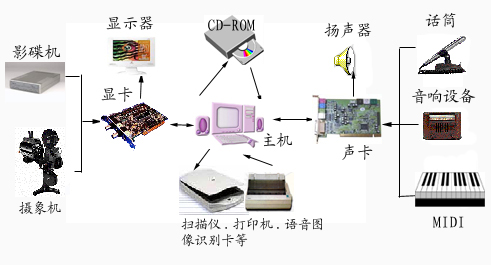
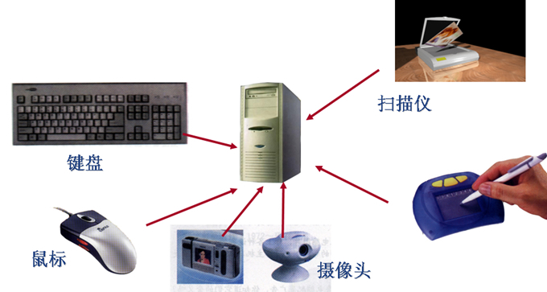

1.一台完整的计算机配置情况。
2.计算机硬件是指有形的物理设备，它是计算机系统中实际物理装置的总称。计算 机的硬件包括主机和外设。主机包括中央处理器和内存储器。外设包括外部存储器、 输入输出设备、其他如：网卡、调制解调器、声卡等。
3.计算机硬件设备展示。

4.计算机主板主要配置简介及各部件作用。
5.CPU形状及在主板上的位置，CPU的功能及结合新时代高配置CPU规格、性能、价格等。

6.简述内存插槽功能，内存分类、频率、更新发展、容量、大小、选购方法等。
7.常见输入设备包括：键盘、鼠标、扫描仪、摄像头、写字板等。输入设备技术及原理、 输入方式、设备类型等。

8.输出设备作用、功能、种类、分类以及发展前景。
9、其他（网卡、声卡、显卡、调制解调器等）介绍。